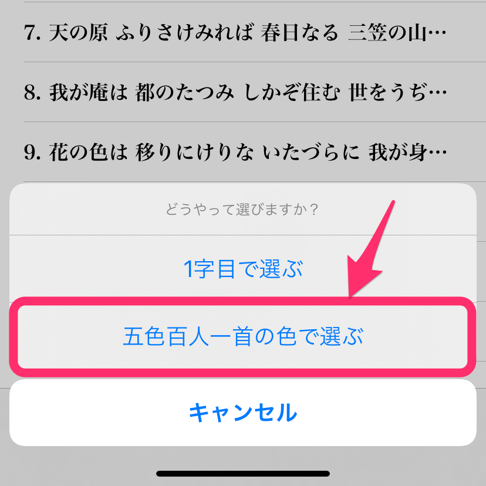

「五色百人一首」は、小倉百人一首を20枚ずつ5色のグループ(青・ピンク・黄色・緑・オレンジ)に色分けしたものです。
「歌を選ぶ」画面の右下で「まとめて選ぶ」をタップすると、下図のようなメニューが表示されます。  この中から、「五色百人一首の色で選ぶ」を選んでください。
「歌を選ぶ」画面の右下で「まとめて選ぶ」をタップすると、下図のようなメニューが表示されます。
この中から、「五色百人一首の色で選ぶ」を選んでください。
「五色百人一首」は、株式会社教育技術研究所の登録商標です。